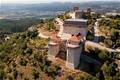
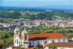
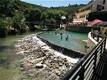
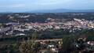

Descobre Ourém
Uma cidade onde a história, a natureza e a tradição se encontram.
Fotografias
Conhece alguns dos locais mais emblemáticos de Ourém através destas fotografias.








Ourém em vídeo
Descobre a beleza e a história da cidade de Ourém.
Poesia
Entre colinas se ergue Ourém,
com o seu castelo a contemplar,
histórias antigas que o tempo tem,
e paisagens que nos fazem parar.
De Fátima à serra, há muito para descobrir.